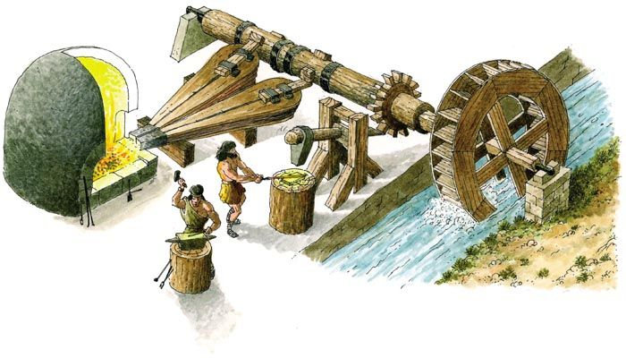
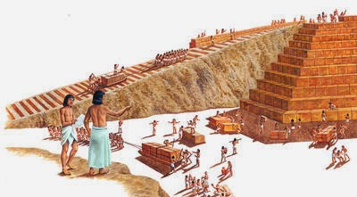

3. MÁQUINAS Y MECANISMOS
3.1. Máquinas
El ser humano a lo largo de la historia ha inventado una serie de dispositivos o artilugios llamados máquinas que le facilitan y, en muchos casos, posibilitan la realización de una tarea.
Máquina
Una máquina es el conjunto de elementos fijos y/o móviles conectados entre sí que transforman/transmiten una forma de energía en otra más útil, realizando algún efecto (movimiento, calentamiento, ...).
flowchart LR
%% ENTRADA
subgraph A [ENTRADA]
A1["Energía de entrada<br>(eléctrica, térmica, mecánica...)"]
end
%% MÁQUINA
subgraph B [MÁQUINA]
B1[Elementos fijos]
B2[Elementos móviles]
B3[Transforman o transmiten<br>la energía]
end
%% SALIDA
subgraph C [SALIDA]
C1["Energía útil<br>(eléctrica, térmica, mecánica...)"]
C2[Efectos]
C3[Movimiento]
C4[Calor]
C5[Fuerza]
end
%% FLUJO PRINCIPAL
A1 --> B3
B3 --> C1
%% RELACIONES INTERNAS
B1 --> B3
B2 --> B3
%% RESULTADOS
C1 --> C2
C2 --> C3
C2 --> C4
C2 --> C5
%% COLORES
style A fill:#d4f8d4,stroke:#2e7d32,stroke-width:3px
style B fill:#d4e4ff,stroke:#1e3a8a,stroke-width:6px
style C fill:#ffe0b2,stroke:#e65100,stroke-width:3px
style A1 fill:#e8fce8,stroke:#2e7d32,stroke-width:2px
style B1 fill:#eaf1ff,stroke:#1e3a8a,stroke-width:2px
style B2 fill:#eaf1ff,stroke:#1e3a8a,stroke-width:2px
style B3 fill:#eaf1ff,stroke:#1e3a8a,stroke-width:2px
style C1 fill:#fff3e0,stroke:#e65100,stroke-width:2px
style C2 fill:#fff3e0,stroke:#e65100,stroke-width:2px
style C3 fill:#fff3e0,stroke:#e65100,stroke-width:2px
style C4 fill:#fff3e0,stroke:#e65100,stroke-width:2px
style C5 fill:#fff3e0,stroke:#e65100,stroke-width:2px
En la figura, se observa una antigua fragua hidráulica. La fuerza del agua movía el martillo, facilitando la labor para elaborar todo tipo de herramientas.
Prácticamente cualquier objeto puede llegar a convertirse en una máquina, sólo hay que darle la utilidad adecuada. Por ejemplo, una cuesta o plano inclinado no es, en principio, una máquina,

pero se convierte en ella cuando el ser humano la usa para elevar objetos con un menor esfuerzo (es más fácil subir objetos por una cuesta que elevarlos a pulso). Lo mismo sucede con un simple palo que nos encontramos tirado en el suelo, si lo usamos para mover algún objeto a modo de palanca ya lo hemos convertido en una máquinaLas máquinas suelen clasificarse atendiendo a su complejidad en máquinas simples y máquinas compuestas:
-
Máquinas simples: realizan su trabajo en un sólo paso o etapa. Por ejemplo, las tijeras donde sólo debemos juntar nuestros dedos. Básicamente son tres: la palanca, la rueda y el plano inclinado. Muchas de estas máquinas son conocidas desde la antigüedad y han ido evolucionando hasta nuestros días.
- En el plano inclinado de la figura, el esfuerzo será tanto menor cuanta más larga sea la rampa. Del plano inclinado se derivan muchas otras máquinas como el hacha, los tornillos, la cuña…).
-
Máquinas complejas: realizan el trabajo encadenando distintos pasos o etapas. Por ejemplo, un cortauñas realiza su trabajo en dos pasos: una palanca le transmite la fuerza a otra, la cual se encarga de apretar los extremos en forma de cuña.
3.2. Mecanismos
Mientras que las estructuras (partes fijas) de las máquinas soportan fuerzas de un modo estático (es decir, sin moverse), los mecanismos (partes móviles) permiten el movimiento de los objetos.
Mecanismos
Los mecanismos son los elementos de una máquina destinados a transmitir y transformar las fuerzas y movimientos desde un elemento motriz (o motor) a un elemento receptor; permitiendo al ser humano realizar trabajos con mayor comodidad y/o, menor esfuerzo (o en menor tiempo).
flowchart LR
%% ENTRADA
subgraph A [ENTRADA]
A1[Elemento motriz / Motor]
end
%% MECANISMOS
subgraph B [MECANISMOS]
B1[MECANISMOS]
end
%% ACCIONES
subgraph C [ACCIONES]
C1[Transmiten fuerzas]
C2[Transmiten/Transforman movimientos]
end
%% SALIDA
subgraph D [SALIDA]
D1[Elemento receptor]
D2[Trabajo con mayor comodidad]
D3[Trabajo con menor esfuerzo]
D4[Trabajo en menos tiempo]
end
%% FLUJO PRINCIPAL
A1 --> B1
B1 --> C1
B1 --> C2
B1 --> D1
D1 --> D2
D1 --> D3
D1 --> D4
%% COLORES
style A fill:#d4f8d4,stroke:#2e7d32,stroke-width:3px
style B fill:#d4e4ff,stroke:#1e3a8a,stroke-width:6px
style C fill:#e0f0ff,stroke:#1e3a8a,stroke-width:3px
style D fill:#ffe0b2,stroke:#e65100,stroke-width:3px
style A1 fill:#e8fce8,stroke:#2e7d32,stroke-width:2px
style B1 fill:#eaf1ff,stroke:#1e3a8a,stroke-width:2px
style C1 fill:#e0f7ff,stroke:#1e3a8a,stroke-width:2px
style C2 fill:#e0f7ff,stroke:#1e3a8a,stroke-width:2px
style D1 fill:#fff3e0,stroke:#e65100,stroke-width:2px
style D2 fill:#fff3e0,stroke:#e65100,stroke-width:2px
style D3 fill:#fff3e0,stroke:#e65100,stroke-width:2px
style D4 fill:#fff3e0,stroke:#e65100,stroke-width:2pxEn todo mecanismo resulta indispensable un elemento motriz que origine el movimiento (que puede ser un muelle, una corriente de agua, nuestros músculos, un motor eléctrico…).
El movimiento originado por el motor se transforma y/o transmite a través de los mecanismos a los elementos receptores (ruedas, brazos mecánicos...) realizando el trabajo para el que fueron construidos.